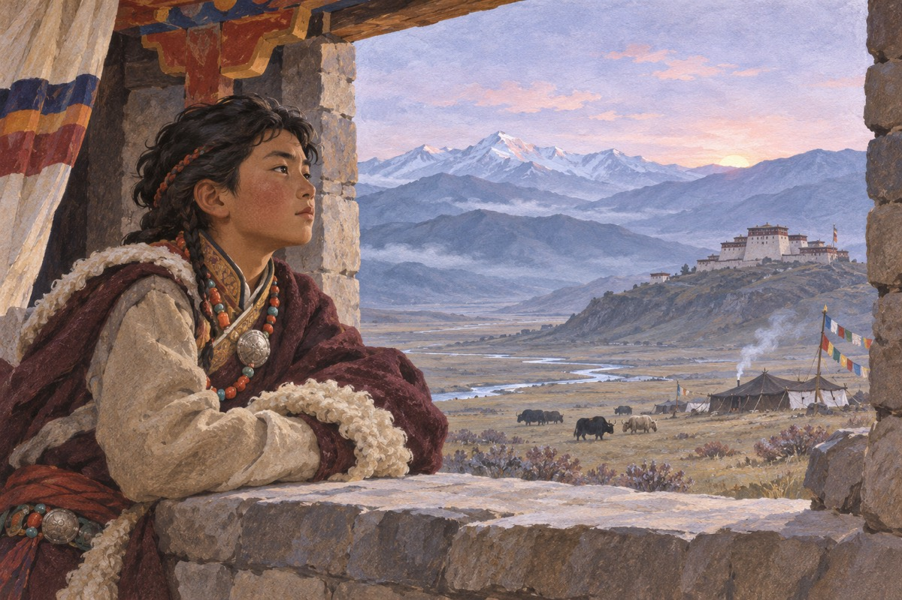
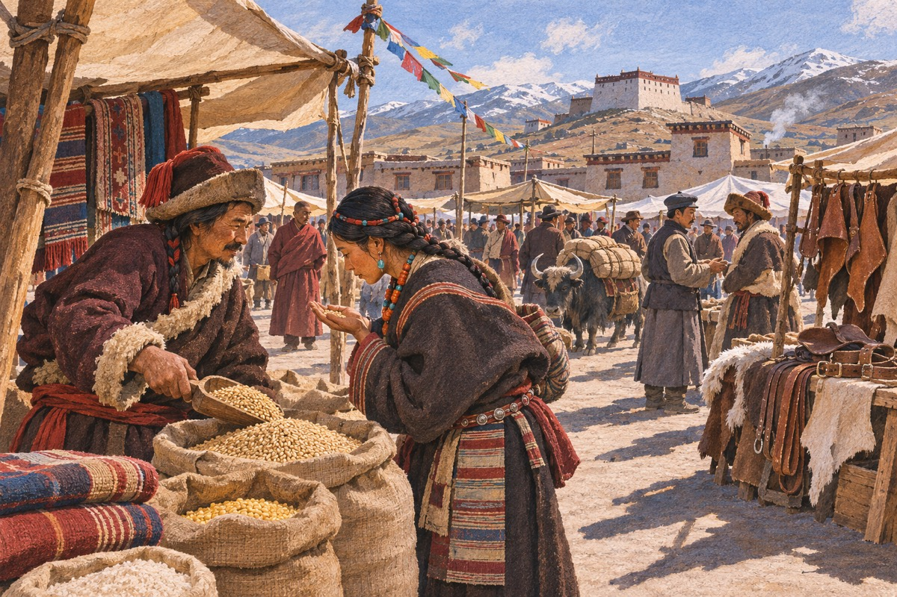
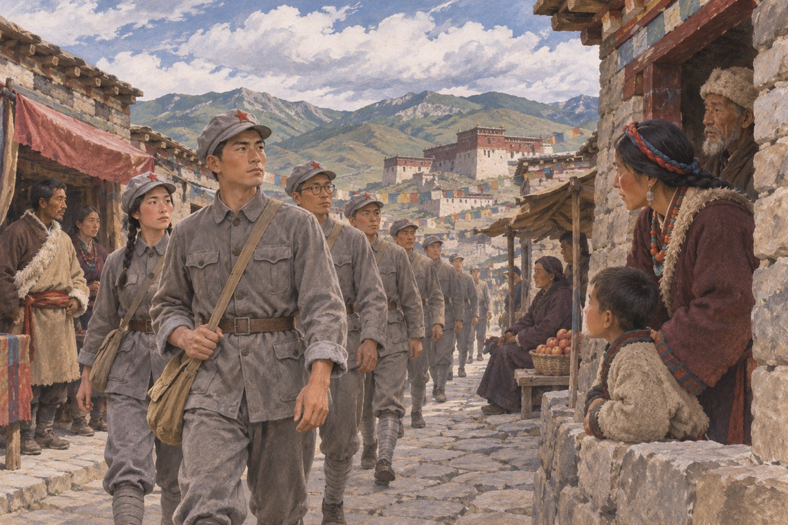

傻子
麦其土司家的二少爷生下来就不哭，三岁才会说话，说话也不像别人那样绕弯子。寨子里的人都说他是个傻子。他自己不这么想，他觉得别人说话太费劲。他母亲是汉人，从前在成都的街上讨生活，被土司用两匹马换了回来。她说：我儿子不傻，他只是不肯装。土司说：这孩子将来会吃亏。他母亲说：不会，他连亏都不认得。寨子里的人当面叫他二少爷，背后叫他傻子。他听见了，也不生气，只是记住了谁这么叫他。

卓玛
侍女卓玛比他大五岁，负责照顾他。她给他梳头，给他暖被窝，教他认寨子里的人。他说：你以后嫁人了怎么办。她说：那我就不能伺候少爷了。他说：那我不让你嫁。她说：少爷，你说的是傻话。他后来果然没留住她。卓玛出嫁那天，穿着一身新衣服，头上戴着银饰。她来给他磕头，说：少爷，我走了。他说：你走吧。她走到门口，回头看了一眼。他把脸转向窗户，听见楼下的门开了又关。
哥哥
大少爷是前妻生的，骑马、打枪、管人，样样都比弟弟强。父亲说：这个家以后要靠你哥哥。傻子说：好。父亲说：你就一点不争。他说：我争不过。父亲看着他，看了很久，说：你这个人，我有时候看不透。哥哥说：你要是生在汉人的地方，早就被人卖了。他说：我生在这儿。哥哥说：所以你还活着。父亲在旁边听着，笑了。后来他对管家说：这两个儿子，一个能打天下，一个能守天下。
黄特派员
国民党政府的黄特派员来了，带着枪和一箱种子。他说：这是罂粟，种下去，一年能赚十年的钱。土司说：这东西害人。特派员说：钱不害人。土司想了一夜，第二天让人把种子撒进了最肥的地。特派员说：种一季，够你们吃十年。土司说：那十年以后呢。特派员说：十年以后我已经不在这个位置上了。土司听懂了他的意思，也听懂了自己该做什么。他把种子收下，给了他一个金罗汉。
银子
那一年罂粟花开得漫山遍野，白得像雪。麦其家赚的钱装满了三间屋子，银子堆在库房里，晚上有人守着。土司说：我这辈子没见过这么多钱。傻子说：明年就没了。土司说：你说什么。他说：大家都种，就不值钱了。库房里的银子太多，管家每天要去数一遍，数到天黑。傻子站在门口看。管家说：少爷，你看什么。他说：我看这些银子，会不会自己跑掉。管家说：银子不会跑。他说：人会。
麦子
父亲问两个儿子明年种什么。哥哥说：种罂粟，别人种我们才赚钱。傻子说：种麦子。父亲说：为什么。他说：人不能吃银子。满屋子的人都笑了。父亲没有笑，他让一半的地种了麦子。那一年，全藏区只有麦其家有粮食。父亲问：你怎么知道别人都种罂粟。他说：因为黄特派员把种子卖给了每一个土司。父亲愣了一下，说：你怎么知道。他说：他走的时候，马车上少了一只箱子，可他说只卖给我们一家。

饥荒
别的土司把地全种了罂粟，遇上荒年，饿死了人。拉雪巴土司的人赶着牛羊来换粮，麦其家开出天价。傻子站在寨墙上，看见山下有人啃树皮。他说：卖给他们吧。哥哥说：等他们死光了，地就是我们的。他说：地是我们的，人不是。哥哥说：你心太软，成不了事。他说：我要是成了事，也就不是我了。那天晚上，他让人开了侧门，放走了十几个饿得走不动的人。管家说：老爷问起来怎么说。他说：就说他们自己跑的。
开仓
父亲让他去守北方的寨子。他到了以后，第一件事是开仓放粮。管家说：老爷会怪罪。他说：我担着。饥民跪在雪地里磕头，他把人一个个扶起来，说：粮食不是白给的，你们给我修路。那年冬天，他修出了一条从寨子到边境的路。修路的人一天管两顿饭，一顿干的，一顿稀的。有个老汉说：少爷，这条路修到哪儿。他说：修到你们能走的地方。老汉没听懂，可他还是每天来，一直修到开春。路修完那天，他站在路口，说：这路以后会有人走。
第一个集市
他把粮食换成皮毛、盐和枪，又在路边划出一块地，说：谁来做买卖，我不收税，只收一碗水。三个月后，那里有了十几间铺子，有汉人、有回回、有说各种话的人。他说：这里以后会是一个镇子。管家说：少爷，你真是个傻子。他说：我知道。市场开张那天，来了三十几个人，摆了七张摊子。有人卖盐，有人卖茶，有人卖刀子。他挨个走过去，问人家从哪来。有个回回说：从很远的地方。他说：那你以后就别走那么远了。那人愣了一下，笑了。

汪波土司
汪波土司派兵来抢粮。傻子没有打，他让人把粮仓打开，说：你们要多少拿多少。对方愣住了。他又说：拿完了，明年还来不来。对方说：来。他说：那明年我带你们做生意。那一年，汪波土司成了他的客户。汪波土司的兵把粮食搬上车，搬到一半，他让人端出酒来。他说：喝完再走。那些兵你看我我看你。他先喝了一碗。后来他们喝完了，走的时候还朝他鞠了个躬。管家说：少爷，你这是做什么。他说：让他们记住，粮食是从谁手里拿的。
塔娜
茸贡土司的女儿塔娜来了。她长得好看，眼睛像两颗黑石头。她是来借粮的。傻子说：粮可以给，人也可以给，你嫁给我。她说：你是个傻子。他说：我知道。她说：那我嫁。她说完，自己先笑了。她进门的时候，院子里的人都停了手。塔娜说：你连枪都不会打。他说：我会数钱。她说：数钱有什么用。他说：钱能买枪。她看了他一眼，说：你要真是个傻子就好了。他说：为什么。她说：那样我就不用怕你。
婚礼
婚礼办了三天，全藏区的土司都来了。哥哥喝多了，拉着塔娜的手说：你嫁给他，可惜了。塔娜说：可惜什么。他说：可惜你是个活人。这句话被傻子听见了。他站在门口，端着一碗酒，说：哥哥，你醉了。婚礼上他喝了很多酒，一直笑。有人说：少爷今天高兴。他说：是。他说：我娶了全藏区最好看的女人。他说这话的时候，眼睛看着哥哥。哥哥把酒碗放下，站起来，走了出去。
翁波意西
一个叫翁波意西的喇嘛来到边界，说土司制度要完了，人人平等。土司派人把他抓起来，割了舌头。傻子去看他，他在地上写字：你信不信。傻子说：我信。他又写：那你说出来。傻子说：我说不出来。翁波意西在地上写：你不怕我。他说：不怕。他又写：那你不怕你父亲。他说：怕。他写：那你为什么护我。他说：因为你说的那句话，我父亲听了会发抖，可我听了不会。
翁波意西第二次
翁波意西被放回来，又开口说话。土司又抓他，这次要杀。傻子跪在父亲面前，说：留他一条命。父亲说：你为什么护他。他说：因为他说的跟我想的一样。父亲看了他很久，说：把他舌头割了，人留着。行刑的人在院子里等着。傻子跪在父亲脚边，膝盖压在石板上，压得生疼。他说：父亲，你杀了他，这个寨子里就再没有人敢说真话了。父亲说：本来也没有。他说：有，只是他们不敢说。
哥哥的战功
哥哥带兵去打汪波土司，打了两年，赢了三场仗，丢了半个寨子的人。他回来的时候，马后面拖着俘虏的头。父亲在寨门口接他，说：你辛苦了。傻子站在后面，看见那些头，转过身吐了。那些头挂在马鞍边上，苍蝇围着转。哥哥说：你怕了。他说：我怕。哥哥说：怕就对了。他说：你不怕。哥哥说：我怕过。他说：什么时候。哥哥说：第一次杀人的时候。他说完，把马牵走了。
传位
父亲老了，要传位。他把两个儿子叫到跟前，说：这个家，谁接。管家说：大少爷。头人说：大少爷。父亲看着傻子，说：你说。傻子说：我接不了。父亲说：为什么。他说：我不喜欢杀人。父亲闭上眼睛，说：那就是你哥哥了。父亲说：你不喜欢杀人，可你要管人。他说：管人不用杀。父亲说：你试试。他说：我试过，在边界。父亲沉默了一会儿，说：边界那点人，不算人。他说：在我这儿算。
塔娜和哥哥
塔娜常常回官寨，说是去看婆婆。有人告诉傻子：你哥哥和她在一起。傻子说：我知道。那人说：你不生气。他说：她本来就不喜欢我。他说：她喜欢的是土司的儿子，不是我。雪落在官寨的屋顶上，一层一层。他一个人坐在楼上，听楼下的脚步声。他知道那是谁。他没有下去，也没有叫人。他想：这栋楼里，只有我一个人是清醒的。他又想：清醒的人最难受。他把灯吹灭了。
父亲之死
父亲死在冬天。他死前把傻子叫到床边，说：我一直知道你不傻。傻子说：我知道。父亲说：那你为什么装。他说：因为不装，我活不到今天。父亲笑了一下，说：你比你哥哥强。他说完，手就凉了。他说：你为什么不早说。父亲说：早说了，你就装不成了。他说：你一直知道。父亲说：我是你父亲。他说：那你为什么还让哥哥接。父亲说：因为他会杀人，你不会。他说：这算理由吗。父亲说：在这个地方，算。
出处 · 第 12 章《炮声》
母亲之死
母亲死在他怀里。她说：我这辈子，从成都的街上走到这儿，值了。她说：你别学你父亲。他说：我知道。她说：你要活着。他说：我尽量。她闭上眼睛，脸上还带着妆。那天寨子里的人都在忙着办丧事，没有人来管他。他给她擦脸，把胭脂擦掉，露出一张黄黄的脸。他说：你从来不喜欢这些东西。他说：你是为了让别人看。他把她的手放好，站起来，走到窗前。外面在下雪，院子里没有一个人。
哥哥之死
哥哥被人杀死在路上，凶手是当年被他父亲杀掉的仇人的儿子。那个人叫多吉次仁，等了十几年。傻子去看尸体，说：他死的时候，脸是朝上的。有人说：那又怎样。他说：说明他不怕。他蹲下去，把哥哥的眼睛合上。他说：你这个人，一辈子没怕过谁。他说：可你也没爱过谁。他站起来，对管家说：把他抬回去，按土司儿子的规矩办。管家说：老爷那边。他说：我去说。
土司制度走向消亡
随着旧有的土司格局瓦解，解放军进入这一地区。麦其家的权力不再能靠土地、武力和历来的领地秩序维持。二少爷眼见家族所处的时代结束，过去围绕继承展开的争斗也随之失去立足之处。
出处 · 《尘埃落定》末部

二少爷走到故事尽头
家族几代积累的仇恨最终追上二少爷。叙述由这个自称傻子的主人公讲到自己的死亡，麦其土司一家的命运也随着他的讲述走到尽头。
出处 · 《尘埃落定》末章